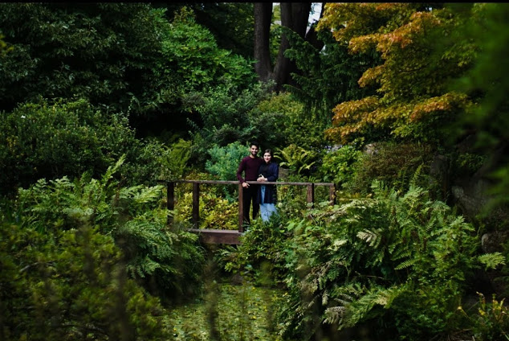

ABOUT ME
Photography is my favorite way to express myself. My photos give people a chance to see the way I think. My photos help bring attention to the little things that often get overlooked. Almost like collaborating thoughts, photography shows people new angles and perspectives on life. I love presenting my work to people, because my photos are like a peek through my eyes. My photos show my unique thought process and my interpretation of the world around me. The exploration of these small moments in time help me to indulge in the moment. My goal and ultimate feeling of success is drawing other people into that moment aswell.
I am "Raja Ali" and this is me.

few fun facts about me:
(1) My "smile" is brighter than my future. (2)I use the camera to capture and document moments in life. (3) Both of my arms are fractured. (4) I can do back-flips. (5) My name is Raja, but my friends call me "Rajwinder". (6) I am Inject-o-phobic (not a word, but I am scared of injections). (7) I've always wanted to ride a bike but I drive a car. (8) Been watching dragon ball since I was 5.

![Insect  My interest in photography began when I was around 17 (2002). This was a strange time, as I was walking on a cold breezy winter after a hecitc session at the institue. Lost in thoughts, having flashbacks of all the good and bad things in my past. Suddenly, a little creature caught my attention. I casually captured the moment using my Samsung S4 (Selective Mode) without any artistic intention, but the desire to "freeze time". ... As I glanced at the picture, I felt this weird interconnecting feeling. I then Contemplated the picture from each angle. When suddenly I realised it's not the camera that captured that moment, rahter it was the eye. And, that is how the journey began. I started capturing objects on daily basis. From towering buildings in town to even a plucked leaf on the ground, eveything started to draw my attention. As the time went by, my interst for photography gradually increased. The interest really boosted when I tried my freind's Sony a600 (Mirrorless) a prime lens for the first time. What an experience it was! I was forced to move, to think about my shots and to work harder on composition. I had to learn to zoom with my feet! Added to that was the fact that with a fast prime lens I was able to blur the background and get shots that were impossible before. My enthusiasm was born.](images/fulls/me5.jpg){kind=link}